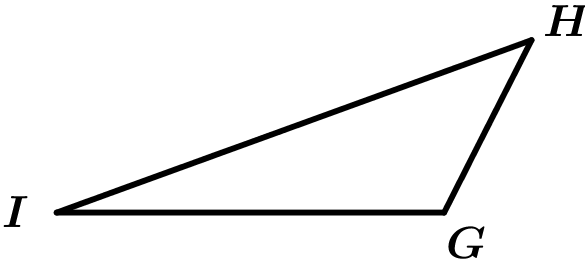

Triángulo obstusángulo
El triángulo obtusángulo es aquel que tiene un ángulo obtuso: es decir, que mide más de 90°. De los tres ángulos interiores del triángulo obtusángulo, por lo tanto, uno es obtuso, mientras que los otros dos son agudos (miden menos de 90°).
